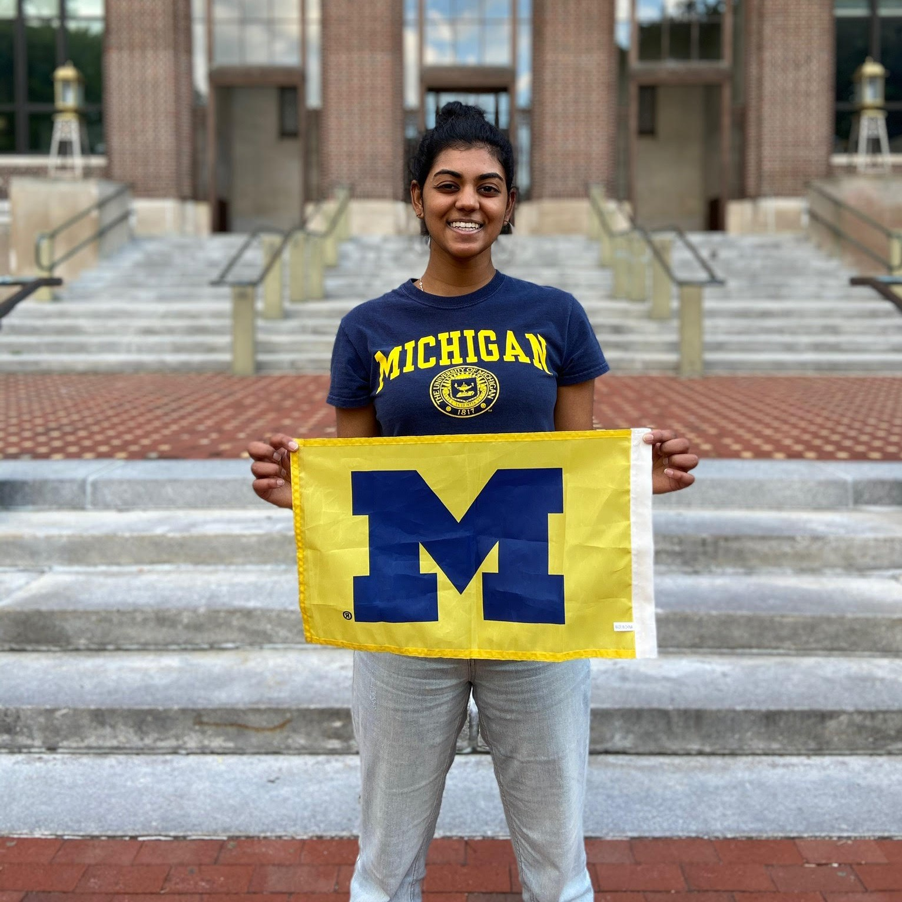

Resume
Education & Skills

Go Blue!
M.S. Information | UX Design & Research
University of Michigan School of Information, Ann Arbor, MI (2020-2021)
B.S. Information | UX Design
University of Michigan School of Information, Ann Arbor, MI (2016-2020)
Computer Skills
Sketch, Figma, InVision, Web Design, Digital Product Design, HTML5, CSS3, Jira, Agile Methodology, Research, C++, Python, Django, GitHub, Statistical R
Certificates/Badges
- Introduction to HTML5 by University of Michigan on Coursera
- Microsoft Educator Community Badge - Leading Change: Go Beyond Gamification
Work Experience
Interaction Designer | 1Cademy
June 2020 - August 2020
1Cademy Search Feature
- Redesigned the Search feature on the 1Cademy platform and integrated filter and sort functionalities to better accommodate the navigational behaviors of COVID-19 researchers and general user
- Presented wireframes/prototypes and critiqued other design ideas during design team meetings to update the application aesthetic and ease the users' experience with the platform
- Skills: UI Design, Interaction Academic Research Design, Collaboration
UX Research Course Instructional Assistant | UM School of Information
October 2019 - April 2020
- Worked with graduate student instructors and professors to develop course curriculum and teach students course concepts and good research practice
- Concepts: Competitive Analysis, Heuristic Evaluations, Survey/Interview Protocol, Personas, Scenarios, Usability Testing, Recommendations
- Skills: Teaching, Understanding Good Research Practice, Conflict Resolution
Product Design Intern | Stats Perform
June 2019 - August 2019
Tennis Tournament Widget
- Conducted user and usability research and competitive analysis to prove business benefits and viability of tennis widgets in the sports statistics market
- Designed public-facing widgets through Sketch to provide users with real time tennis statistics and presented prototypes to executive board
- Skills: Sketch, InVision, UX Research Methodologies, Interviewing, Wireframing